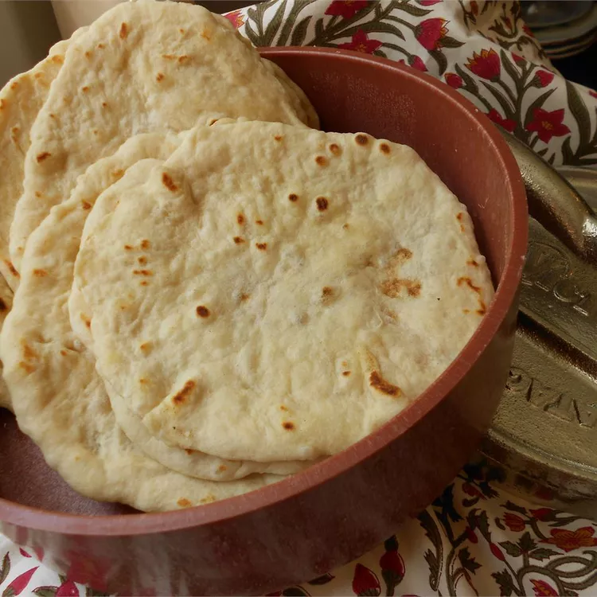

Tortillas

Description
This traditional flour tortilla recipe makes soft and delicious homemade tortillas that taste much better than store-bought. Do not substitute vegetable oil or shortening for the lard.
ingredients
- 4 cups all-purpose flour
- 2 teaspoons baking powder
- 1 teaspoon salt
- 2 tablespoons lard
- 1 ½ cups water
Steps
- Whisk flour, baking powder, and salt together in a mixing bowl. Rub in lard with your fingers until mixture resembles cornmeal. Add water and mix until dough comes together.
- Transfer dough onto a lightly floured surface; knead for a few minutes until smooth and elastic. Divide dough into 24 equal pieces and roll each piece into a ball.
- Preheat a large skillet over medium-high heat. Use a well-floured rolling pin to roll a dough ball into a thin, round tortilla. Place into the hot skillet, and cook until bubbly and golden; flip and continue cooking until golden on the other side. Place the cooked tortilla in a tortilla warmer; continue rolling and cooking the remaining dough.